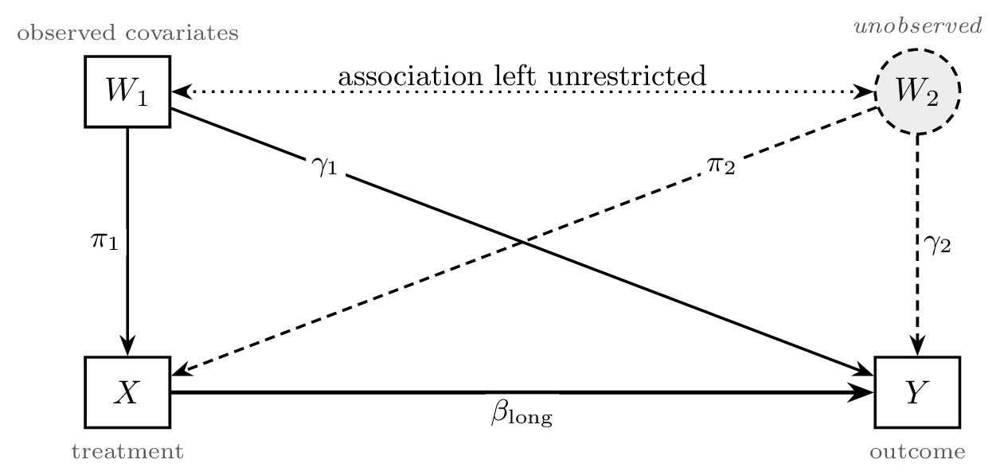
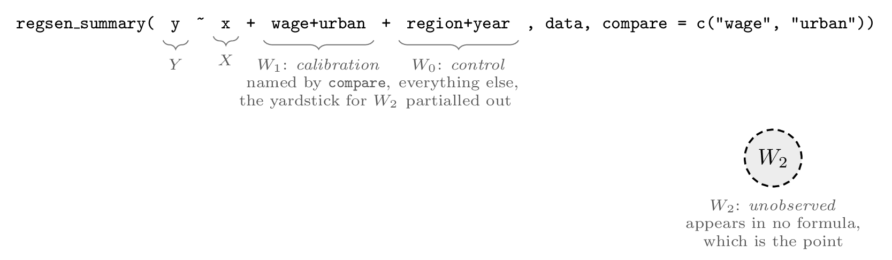
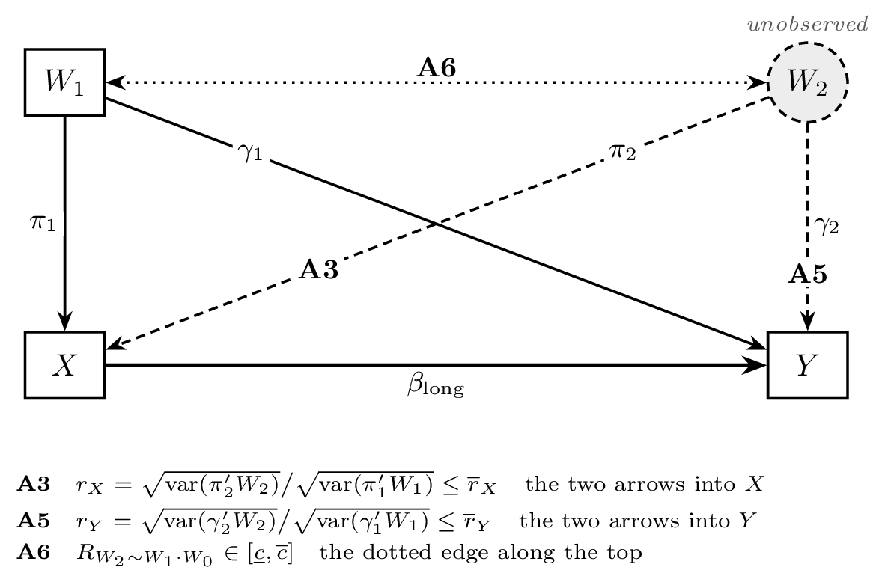
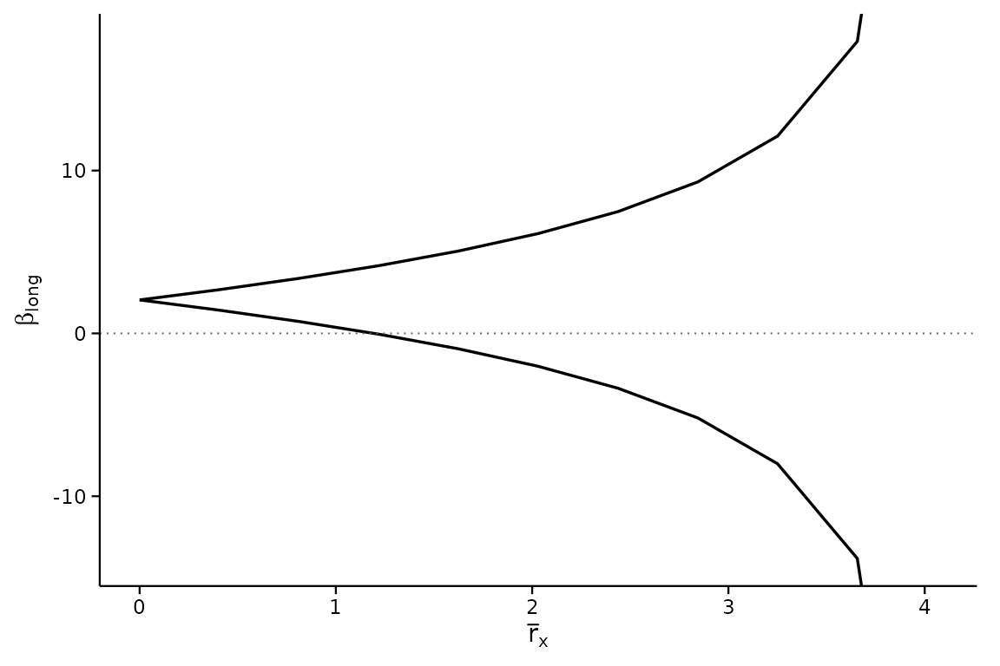
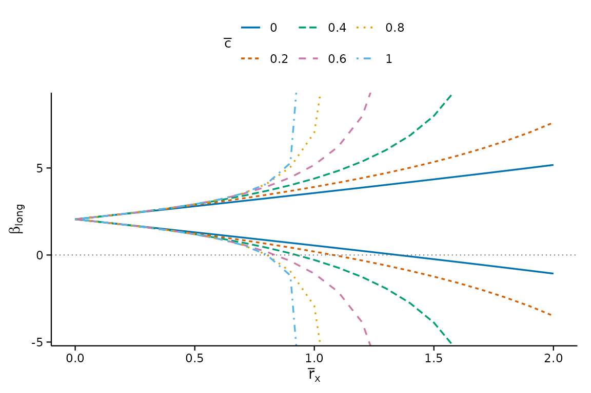
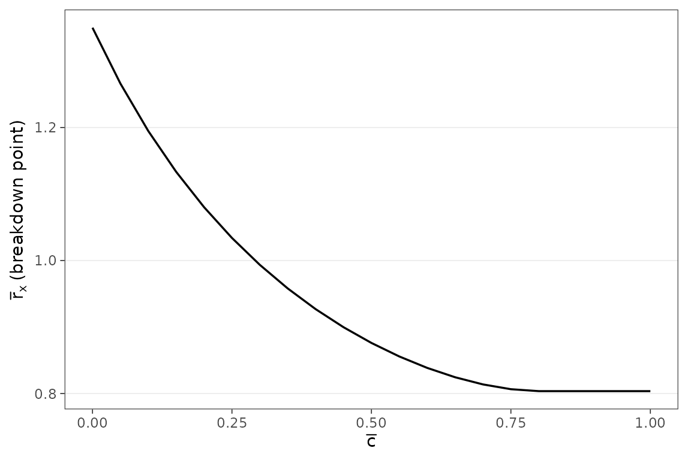
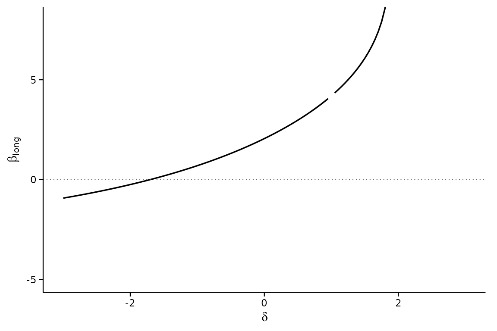
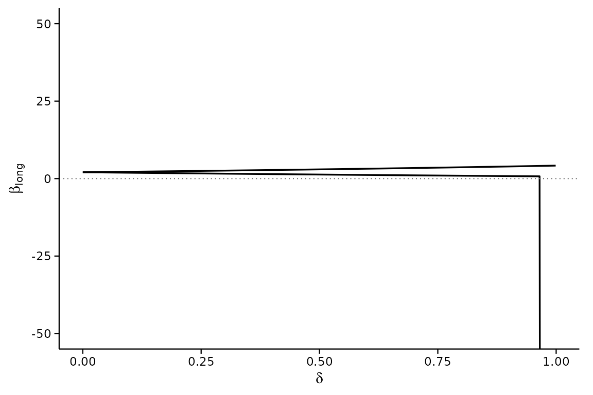
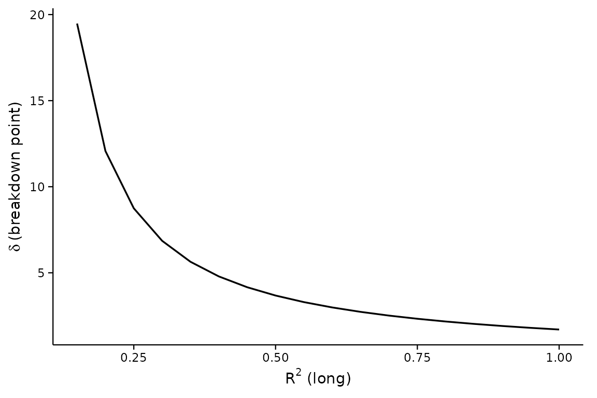
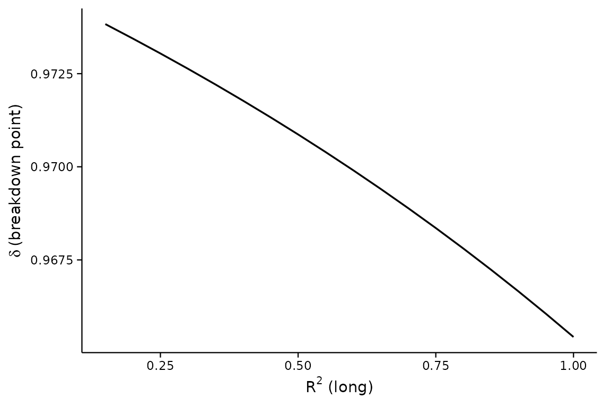

This vignette replicates the BFG2020 empirical application used in
the Stata regsensitivity vignette, walking through the
Diegert-Masten-Poirier (2026) and Oster (2019)
/ Masten-Poirier (2026) analyses. It shows how to call the
package; for what the numbers mean, what to conclude from them and what
to write in a paper, see
vignette("interpreting-results").
The setup
Every analysis in this package concerns the same picture.

You want , the coefficient on the treatment in a regression that adjusts for everything relevant, observed or not. You can only run the medium regression, which adjusts for the observed covariates and returns . The two agree exactly when : no selection on unobservables, the dashed arrow into erased. Sensitivity analysis asks how far that can fail before your conclusion does.
Note what the baseline does not assume. It leaves free – the unobservable may matter arbitrarily much for the outcome – and it leaves the – association free. That is why the observed controls being endogenous is not, on its own, fatal.
The observed covariates split in two. The ones you name in
compare are the calibration covariates
:
the yardstick the unobservable is measured against. Everything else is a
control covariate
,
adjusted for but never used as a yardstick – fixed effects and nuisance
controls belong here. (Stata’s regsensitivity and this
package’s argument names call
the comparison set, which is where compare gets
its name; the DMP paper calls it the calibration set. They are the same
thing.)
library(regsensitivity)
library(ggplot2)
data(bfg2020)
bfg2020$statea <- factor(bfg2020$statea)
form <- avgrep2000to2016 ~ tye_tfe890_500kNI_100_l6 +
log_area_2010 + lat + lon + temp_mean + rain_mean + elev_mean +
d_coa + d_riv + d_lak + ave_gyi + statea
compare <- c("log_area_2010", "lat", "lon", "temp_mean", "rain_mean",
"elev_mean", "d_coa", "d_riv", "d_lak", "ave_gyi")So here the geographic and climate variables are
and the state fixed effects statea are
:
the omitted variable’s importance is judged against geography and
climate, never against state dummies. In general:

nocompare draws the same line from the other side,
naming
instead; give at most one of the two. If you give neither, every control
enters
.
The three sensitivity parameters
Rather than assume , DMP bound how large the unobservable’s role can be. Three parameters do the work, and each caps one feature of the picture above:

-
rxbarbounds : how much the unobservable moves the treatment, as a multiple of how much the calibration covariates do.rxbar = 1says the unobservable is at most as important as taken together. -
rybarbounds : the same ratio for the outcome. Left atInfby default, which assumes nothing about . -
cbarandclowbound how much of the unobservable the calibration covariates already explain. The defaultcbar = 1imposes nothing, and is the case in which the controls may be arbitrarily endogenous.
Because
and
are relative, their scale only means something against a
reference; calibrate_rho() and
calibrate_partial_r2() supply the point-identified
reference values DMP propose.
The “short” regression coefficient (with no controls) and the “medium” regression coefficient (with state FE and the comparison controls) give a first sense of how much controls move the estimate:
DMP (2026) bounds
regsen_bounds() is the workhorse. Out of the box it
sweeps over a grid of rxbar from 0 to the threshold where
the identified set first becomes
,
holding cbar fixed at the supplied value.
bnds <- regsen_bounds(form, bfg2020, compare = compare, cbar = 0.1)
print(bnds)
#>
#> Regression Sensitivity Analysis ----- Bounds
#> ------------------------------------------------------------------------
#> Analysis: DMP (2026)
#> Treatment: tye_tfe890_500kNI_100_l6
#> Outcome: avgrep2000to2016
#> N (obs): 2036
#> Hypothesis: Beta > 0
#> Breakdown point: 1.1947
#>
#> --- Summary statistics ----------------------------------
#> Beta (short) 1.9246
#> Beta (medium) 2.0548
#> R2 (short) 0.0328
#> R2 (medium) 0.1051
#> Var(Y) 101.7387
#> Var(X) 0.9014
#> Var(X_Residual) 0.8823
#>
#> --- Results ---------------------------------------------
#> rxbar rybar cbar bmin bmax
#> 0 +Inf 0.1 2.0548 2.0548
#> 0.4063 +Inf 0.1 1.4249 2.6846
#> 0.8126 +Inf 0.1 0.73082 3.3787
#> 1.2189 +Inf 0.1 -0.04935 4.1589
#> 1.6252 +Inf 0.1 -0.94897 5.0585
#> 2.0315 +Inf 0.1 -2.0229 6.1324
#> 2.4378 +Inf 0.1 -3.3697 7.4792
#> 2.8441 +Inf 0.1 -5.192 9.3015
#> 3.2504 +Inf 0.1 -8.0056 12.115
#> 3.6567 +Inf 0.1 -13.822 17.932
#> 4.063 +Inf 0.1 -Inf +InfThe bounds widen monotonically as rxbar (the strength of
the unobservable’s effect on the treatment) grows. The breakdown point
reported in the header is the rxbar value at which the
hypothesis
(,
in this case) first fails.
plot(bnds)
Sweeping over multiple cbar values lets you see how
stronger correlations between the comparison controls and the
unobservable affect the bounds:
multi <- regsen_bounds(form, bfg2020, compare = compare,
rxbar = seq(0, 2, length.out = 21),
cbar = c(0, 0.2, 0.4, 0.6, 0.8, 1.0))
plot(multi)
Constrained rybar
Setting rybar to a finite value adds a constraint on the
unobservable’s effect on the outcome. When cbar > 0 this
is a nonconvex problem and we solve it with a global optimizer
(nloptr / DIRECT-L); when cbar = 0 it has a
closed form. Both cases run through the same
regsen_bounds() call:
fin <- regsen_bounds(form, bfg2020, compare = compare, rybar = 2)
print(fin)
#>
#> Regression Sensitivity Analysis ----- Bounds
#> ------------------------------------------------------------------------
#> Analysis: DMP (2026)
#> Treatment: tye_tfe890_500kNI_100_l6
#> Outcome: avgrep2000to2016
#> N (obs): 2036
#> Hypothesis: Beta > 0
#> Breakdown point: 0.8035
#>
#> --- Summary statistics ----------------------------------
#> Beta (short) 1.9246
#> Beta (medium) 2.0548
#> R2 (short) 0.0328
#> R2 (medium) 0.1051
#> Var(Y) 101.7387
#> Var(X) 0.9014
#> Var(X_Residual) 0.8823
#>
#> --- Results ---------------------------------------------
#> rxbar rybar cbar bmin bmax
#> 0 2 1 2.0548 2.0548
#> 0.098939 2 1 1.9107 2.2007
#> 0.19788 2 1 1.7612 2.3539
#> 0.29682 2 1 1.5983 2.5185
#> 0.39576 2 1 1.4149 2.6989
#> 0.49469 2 1 1.2027 2.9069
#> 0.59363 2 1 0.94779 3.1617
#> 0.69257 2 1 0.60803 3.5015
#> 0.79151 2 1 0.086812 4.0227
#> 0.89045 2 1 -0.99272 5.1022
#> 0.98939 2 1 -Inf +InfYou can also express rybar as a function of
rxbar, e.g. rybar = rxbar:
expr <- regsen_bounds(form, bfg2020, compare = compare,
rybar_expr = function(rx) rx,
rxbar = seq(0, 1, 0.1))
expr$results
#> rxbar rybar cbar bmin bmax
#> 1 0.0 0.0 1 2.054759 2.054759
#> 2 0.1 0.1 1 2.050500 2.059033
#> 3 0.2 0.2 1 2.037541 2.072210
#> 4 0.3 0.3 1 2.015278 2.095477
#> 5 0.4 0.4 1 1.982458 2.131293
#> 6 0.5 0.5 1 1.936611 2.184491
#> 7 0.6 0.6 1 1.872585 2.265157
#> 8 0.7 0.7 1 1.778058 2.397467
#> 9 0.8 0.8 1 1.615327 2.656118
#> 10 0.9 0.9 1 1.189271 3.438830
#> 11 1.0 1.0 1 -Inf InfDMP breakdown
regsen_breakdown() reports the breakdown point as a
function of one of the sensitivity parameters, holding the others
fixed:
bd <- regsen_breakdown(form, bfg2020, compare = compare,
cbar = seq(0, 1, 0.05))
plot(bd)
You can also sweep across hypothesis values:
hyp <- regsen_breakdown(form, bfg2020, compare = compare,
beta = bnd_lb(seq(-1, 1, 0.2)))
print(hyp)
#>
#> Regression Sensitivity Analysis ----- Breakdown Frontier
#> ------------------------------------------------------------------------
#> Analysis: DMP (2026)
#> Treatment: tye_tfe890_500kNI_100_l6
#> Outcome: avgrep2000to2016
#> N (obs): 2036
#> Hypothesis: Beta > Beta(Hypothesis)
#>
#> --- Summary statistics ----------------------------------
#> Beta (short) 1.9246
#> Beta (medium) 2.0548
#> R2 (short) 0.0328
#> R2 (medium) 0.1051
#> Var(Y) 101.7387
#> Var(X) 0.9014
#> Var(X_Residual) 0.8823
#>
#> --- Results ---------------------------------------------
#> index breakdown
#> -1 0.89085
#> -0.8 0.87887
#> -0.6 0.86473
#> -0.4 0.84792
#> -0.2 0.8278
#> 0 0.80356
#> 0.2 0.77418
#> 0.4 0.73835
#> 0.6 0.69452
#> 0.8 0.64083
#> 1 0.57525The frontier in the other direction
direction = "rybar" reports the breakdown point in
rybar at each rxbar instead: how much the
unobservable may matter for the outcome before the conclusion
fails, given how much it may matter for the treatment. This is the
frontier of DMP Theorem 4, and the two directions trace the same curve
in the
plane.
fr <- regsen_breakdown(form, bfg2020, compare = compare, cbar = 1,
direction = "rybar",
rxbar = c(0.5, 1, 2, 4))
fr$results
#> index breakdown
#> 1 0.5 Inf
#> 2 1.0 0.8632973
#> 3 2.0 0.5901671
#> 4 4.0 0.5901671An Inf says the conclusion survives every
rybar at that rxbar; the mirror image, an
Inf from the default direction, says it survives every
rxbar at that rybar.
Asserting endogenous controls
cbar caps how much of the unobservable the comparison
controls can explain. clow is the other end of DMP
Assumption A6: setting it above zero asserts that the controls are
at least that endogenous, which narrows the identified set
rather than widening it.
vapply(c(0, 0.9, 0.99), function(cl) {
regsen_breakdown(form, bfg2020, compare = compare,
cbar = 1, clow = cl)$results$breakdown
}, numeric(1))
#> [1] 0.8035643 0.8177462 0.9136661Oster (2019) bounds
Switching to the Oster analysis with
analysis = "oster":
o <- regsen_bounds(form, bfg2020, compare = compare,
analysis = "oster")
print(o)
#>
#> Regression Sensitivity Analysis ----- Bounds
#> ------------------------------------------------------------------------
#> Analysis: Oster (2019)
#> Treatment: tye_tfe890_500kNI_100_l6
#> Outcome: avgrep2000to2016
#> N (obs): 2036
#> Hypothesis: Beta > 0
#> Breakdown point: 1.7039
#>
#> --- Summary statistics ----------------------------------
#> Beta (short) 1.9246
#> Beta (medium) 2.0548
#> R2 (short) 0.0328
#> R2 (medium) 0.1051
#> Var(Y) 101.7387
#> Var(X) 0.9014
#> Var(X_Residual) 0.8823
#>
#> --- Results ---------------------------------------------
#> delta r2long beta1 beta2 beta3
#> -1 1 0.69842
#> -0.8 1 0.93048
#> -0.6 1 1.1801
#> -0.4 1 1.449
#> -0.2 1 1.7396
#> 0 1 2.0548
#> 0.2 1 2.3981
#> 0.4 1 2.7747
#> 0.6 1 3.1917
#> 0.8 1 3.6595
#> 1 1 -46.171 4.1944Plotting the equality identified set (rotated so that delta is on the x-axis and beta on the y-axis):
o2 <- regsen_bounds(form, bfg2020, compare = compare,
analysis = "oster",
delta = seq(-3, 3, 0.05))
plot(o2, ylim = c(-5, 8))
Oster, |delta| <= d (bound)
ob <- regsen_bounds(form, bfg2020, compare = compare,
analysis = "oster",
delta = seq(0, 0.999, 0.001),
delta_type = "bound")
plot(ob, ylim = c(-50, 50))
Oster breakdown
obd_eq <- regsen_breakdown(form, bfg2020, compare = compare,
analysis = "oster",
r2long = seq(0.15, 1, 0.05),
beta = bnd_eq(0))
plot(obd_eq)
obd_sign <- regsen_breakdown(form, bfg2020, compare = compare,
analysis = "oster",
r2long = seq(0.15, 1, 0.05))
plot(obd_sign)
Summary call
When you don’t know where to start, regsen_summary()
runs the default DMP bounds analysis plus an Oster breakdown sweep at a
few standard r2long values, matching the behaviour of
Stata’s regsensitivity with no subcommand.
s <- regsen_summary(form, bfg2020, compare = compare)
print(s)
#>
#> === DMP (2026) bounds ===
#>
#> Regression Sensitivity Analysis ----- Bounds
#> ------------------------------------------------------------------------
#> Analysis: DMP (2026)
#> Treatment: tye_tfe890_500kNI_100_l6
#> Outcome: avgrep2000to2016
#> N (obs): 2036
#> Hypothesis: Beta > 0
#> Breakdown point: 0.8036
#>
#> --- Summary statistics ----------------------------------
#> Beta (short) 1.9246
#> Beta (medium) 2.0548
#> R2 (short) 0.0328
#> R2 (medium) 0.1051
#> Var(Y) 101.7387
#> Var(X) 0.9014
#> Var(X_Residual) 0.8823
#>
#> --- Results ---------------------------------------------
#> rxbar rybar cbar bmin bmax
#> 0 +Inf 1 2.0548 2.0548
#> 0.098939 +Inf 1 1.9064 2.2031
#> 0.19788 +Inf 1 1.7535 2.356
#> 0.29682 +Inf 1 1.5906 2.5189
#> 0.39576 +Inf 1 1.4106 2.6989
#> 0.49469 +Inf 1 1.2026 2.9069
#> 0.59363 +Inf 1 0.94779 3.1617
#> 0.69257 +Inf 1 0.60803 3.5015
#> 0.79151 +Inf 1 0.086812 4.0227
#> 0.89045 +Inf 1 -0.99272 5.1022
#> 0.98939 +Inf 1 -Inf +Inf
#>
#> === Oster (2019) breakdown ===
#>
#> Regression Sensitivity Analysis ----- Breakdown Frontier
#> ------------------------------------------------------------------------
#> Analysis: Oster (2019)
#> Treatment: tye_tfe890_500kNI_100_l6
#> Outcome: avgrep2000to2016
#> N (obs): 2036
#> Hypothesis: Beta > 0
#>
#> --- Summary statistics ----------------------------------
#> Beta (short) 1.9246
#> Beta (medium) 2.0548
#> R2 (short) 0.0328
#> R2 (medium) 0.1051
#> Var(Y) 101.7387
#> Var(X) 0.9014
#> Var(X_Residual) 0.8823
#>
#> --- Results ---------------------------------------------
#> index breakdown
#> 0.13667 0.97393
#> 0.23667 0.97315
#> 0.33667 0.97232
#> 0.43667 0.97145
#> 0.53667 0.97052
#> 0.63667 0.96954
#> 0.73667 0.9685
#> 0.83667 0.96739
#> 0.93667 0.96622
#> 1 0.96543References
- Diegert, P., Masten, M., and Poirier, A. (2026). Assessing Omitted Variable Bias when the Controls are Endogenous. arXiv:2206.02303.
- Oster, E. (2019). Unobservable Selection and Coefficient Stability: Theory and Evidence. JBES 37(2), 187–204.
- Masten, M., and Poirier, A. (2026). The Effect of Omitted Variables on the Sign of Regression Coefficients. AER 116(7), 2685–2710.
- Bazzi, S., Fiszbein, M., and Gebresilasse, M. (2020). Frontier Culture: The Roots and Persistence of “Rugged Individualism” in the United States. Econometrica 88(6), 2329–2368.